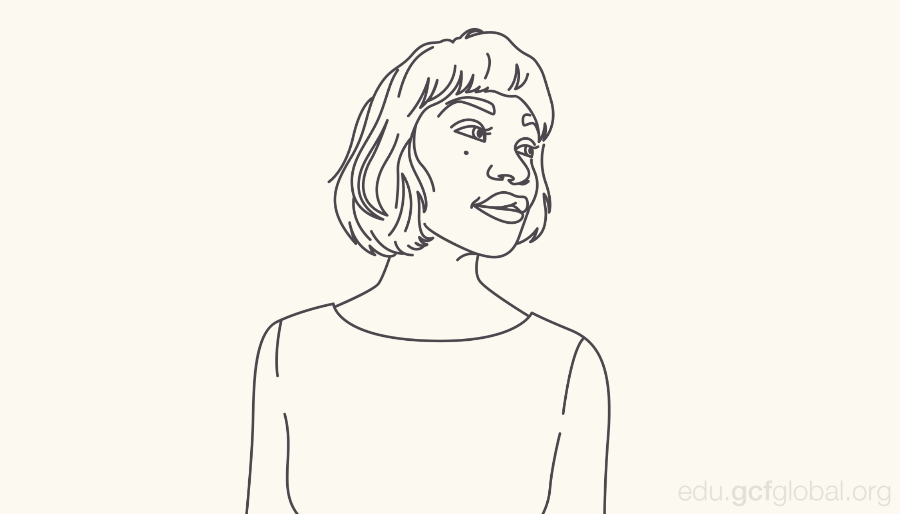

"El diseño no es solo lo que se ve y se siente,
sino también lo que comunica y cómo funciona."
Es una forma que conecta dos o más puntos. Puede ser gruesa o delgada, ondulada o irregular. Esto le da la posibilidad de tener muchos estilos. Las líneas están presentes, frecuentemente, en el diseño, por ejemplo, en dibujos, ilustraciones y elementos gráficos, como texturas y patrones. También es común encontrarlas en las composiciones de texto, ya que pueden enfatizar, dividir u organizar el contenido y hasta guiar el ojo del espectador. Cuando trabajes con líneas, presta atención a cosas como el grosor, el color, la textura y el estilo. Estas cualidades pueden tener gran impacto en la forma que tu diseño es percibido.
Es cualquier área bidimensional con un límite reconocible. Es decir, círculos, cuadrados, triángulos, etc. Estos se dividen en dos categorías: geométrica o regular y orgánica, en donde las formas son más libres. Las formas son importantes para comunicar ideas visualmente, porque les dan peso y las hacen reconocibles. Gracias a ellas entendemos las señales de tráfico, los símbolos y, en gran parte, el arte abstracto. Gracias a las formas podemos reconocer muchas cosas. Tienen un sorprendente número de usos en el diseño cotidiano. Pueden ayudarte a organizar o separar el contenido, a crear ilustraciones simples o a agregar interés a tu trabajo. Aprende a buscarlas en otros diseños diariamente, y pronto comenzarás a verlas en todas partes.
Objetos: Cuando una forma adquiere propiedades 3D, la llamamos objeto, el cual puede existir en el mundo real o simularse utilizando técnicas como la luz, la sombra y la perspectiva para crear la ilusión de profundidad. En el diseño bidimensional los objetos le dan un toque realista al trabajo. Sin ellos, una pelota de goma que rebota es solo un círculo, o un edificio en 3D es solo una serie de rectángulos. En el diseño bidimensional los objetos le dan un toque realista al trabajo. Por ejemplo, una sombra puede crear la ilusión de capas o darle a un elemento profundidad. Cuando los objetos se utilizan bien, pueden convertirse en una gran herramienta para hacer que tu trabajo se destaque.
Textura: Es la cualidad física de una superficie. Al igual que los objetos, puede ser tridimensional y dar una idea de cómo se verá en la vida real. En diseño, la textura agrega profundidad y tacto a las imágenes planas. Los objetos pueden parecer lisos, rugosos, duros o blandos, dependiendo de los elementos. la textura agrega profundidad y tacto a las imágenes planas. Si estás aprendiendo, las texturas son excelentes para usar en imágenes de fondo y pueden agregar mucho interés a tu trabajo. Ten cuidado de no abusar. Demasiada textura puede sobrecargar un diseño fácilmente.
Es la buena distribución del peso visual y puede verse afectado por muchas cosas, incluidas el color, el tamaño, el número y el espacio en blanco. Dominar el equilibrio puede ser complicado al inicio, ya que requiere intuición. Afortunadamente, el mundo del diseño está lleno de ejemplos en los que puedes basarte para entender cómo hacerlo. Los diseños simétricos son iguales o similares en ambos lados de un eje. Se equilibran porque cada lado puede llegar a ser idéntico. Los diseños simétricos son iguales o similares en ambos lados de un eje. Los diseños asimétricos son diferentes, aunque siguen estando bien distribuidos. La composición es equilibrada porque resalta las cosas correctas. Muchos usan algo llamado regla de los tercios, la cual te muestra tu área de trabajo dividida en una cuadrícula de 3x3. El punto focal de la imagen se ubica cerca o sobre de una de las líneas, lo que crea un equilibrio visual con el resto del espacio. Los fundamentos del diseño van más allá de la pieza final, ya que lo importante es apreciar los detalles que conforman cada composición. Esto puede aplicarse a casi cualquier tipo de proyecto, ya sea que estés creando tus propios diseños o simplemente buscando maneras sencillas de mejorar en tu trabajo.